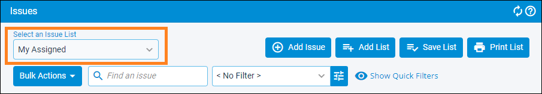
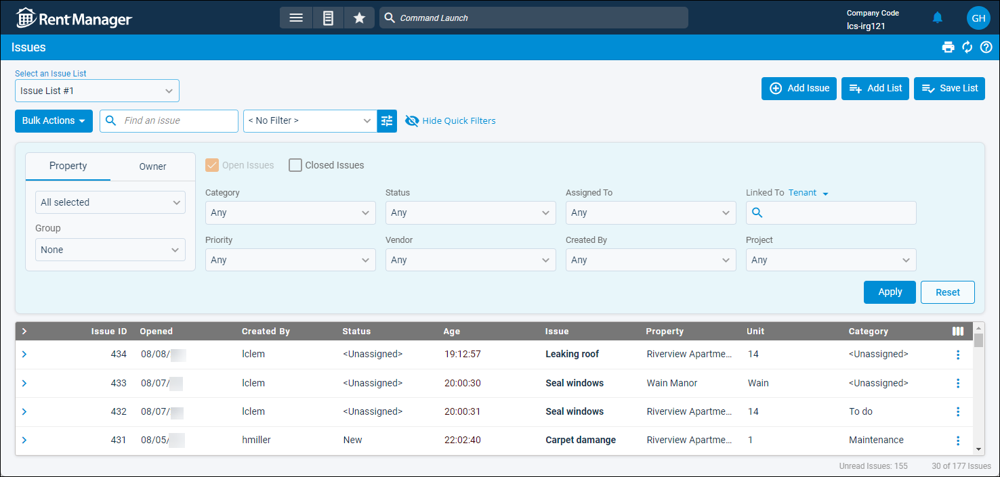
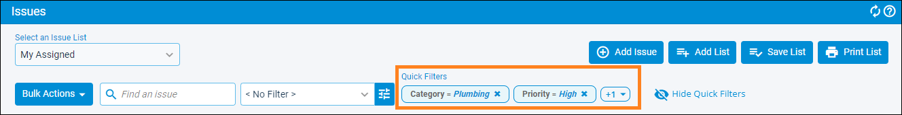
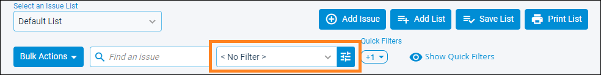

Source: https://rmxhelp.rentmanager.com/Topics/Express/KB/Issues-Saved-List-Add.htm
Create a Saved Issue List
On the Issues page, a list of the service issues in your Rent Manager database display based on your selected filters. For users who manage a large number of issues or who want to be able to see separate lists of issues based on specific criteria, you can use saved issue lists to quickly move from one list to another. You can also establish which list you wish to see by default when you first open the Issues page and which lists have notifications enabled to alert you of updates or new issues.
For example, say you are a service technician who specializes in electrical and HVAC issues. You may want to have your default list set to display all open issues assigned to you. However, you also want to easily locate any issues (regardless of who is assigned) that relate to electrical, and also a separate list for all HVAC issues. Saved issue lists allow you to create a list for each scenario and quickly swap between them from the Issues page.
Or, if you are in charge of the new hire process at your company, you can use this function to create a list to track issues created for new hires to keep track of the progress on their application.
Or, you work in the office and don't handle the maintenance issues yourself, but you are in charge of monitoring issues at multiple properties. You can create a separate issue list for each property to quickly locate all associated issues and look for urgent problems or common patterns.
Related Privileges
| Group | Privilege | Column |
|---|---|---|
| Service Manager | Issues | View |
| List manager | View, Edit |
For more information, refer to Control User Access.
This topic walks you through the steps to most efficiently create saved issue lists, set the default, establish the order, and enable notifications for them.
Step 1: Create a New Issue List
The first step is to create the new issue list. Though you can create a new list from the Manage Saved Lists page or save the new list after applying filters, it is most efficient to create the list from the Issues page as the first step because this is where filters are established, and it ensures that you do not accidentally overwrite the filters of another list you may have already created.
To create a new saved issue list, do the following:
-
Go to
 arrow_forward Services arrow_forward Service Manager arrow_forward Issues.
arrow_forward Services arrow_forward Service Manager arrow_forward Issues.
The Issues page displays. -
At the top, click Add List.
The Save Issue List pop-up displays. -
In the Issue List Name field, enter a unique name to easily identify the contents of the list you are creating (e.g., Riverview Apartments, My Assigned, or Plumbing).
-
Click Save.
The saved issue list is created, and is automatically selected in the Select an Issue List field.
Step 2: Filter Issues
The next step is to set up the desired filters for the list from the Issues page. The filters you establish are applied to the list selected in the Select an Issue List field. To filter your issue list, do the following:
-
Click
 Show Quick Filters and select the filters you wish to apply to this saved issue list.
Show Quick Filters and select the filters you wish to apply to this saved issue list.
Select <Unassigned> to include only issues with no option selected for the quick filter, or Any to disregard the quick filter and include issues with any selection in that field. Each filter option is described in the table below.
Option Description Property
OwnerIf the Property tab is selected, select the properties or property Group to display only issues linked to those properties.
If the Owner tab is selected, select the owners or owner Group to display only issues linked to the properties in those ownerships.
Open Issues
Check to display all issues that do not yet have a Close Date entered. This includes issues with a Status of Resolved if they have no Close Date.
To uncheck this option, the Closed Issues option must be checked.
Closed Issues
Check to display all issues that have a Close Date entered.
To uncheck this option, the Open Issues option must be checked.
Category
The classification of issues to include (e.g., Emergency, Landscaping, Plumbing, etc.), as selected in the issues' Category field. The options available in the list are determined by the categories established in your database. For more information, refer to Issue Categories (Page).
Priority
The level of importance of issues to include (e.g., Low, Medium, High, etc.), as selected in the issues' Priority field. The options available in the list are determined by the priorities established in your database. For more information, refer to Issue Priorities (Page).
Status
The current stage of progress of issues to include (e.g., New, Work In Progress, Resolved, etc.), as selected in the issues' Status field. The options available in the list are determined by the issue statuses established in your database. For more information, refer to Issue Statuses (Page).
Vendor
Include only issues assigned to the selected vendor account as set in the issues' Vendor field. For more information, refer to Vendors (Page).
Assigned To
Include only issues tasked to the selected user as set in the issues' Assigned To User field.
Created By
Include only issues added by the selected user. Select <TWA Submitted> to include only issues submitted by tenants via Tenant Web Access (TWA).
Linked To
Include only issues associated with the selected entity account. First, set the entity type by clicking the arrow next to the dynamic text to the right of the field (Tenant, Prospect, Unit, or Property). Then search and select the account of that entity type in the field below.
Workflow Project
Include only issues that are part of the selected workflow project, as set in the issues' Workflow Project field.
The options available in the list are determined by the workflow projects established in your database. For more information, refer to Workflow Projects and Templates.
-
If any quick filters were edited, click Apply.
The list is filtered based on your selections and each established filter displays under the Quick Filters header.
-
You can select a preset date-related filter from the drop-down or create more advanced filter groups using the field pictured below. These filters are applied in addition to any established Quick Filters.

Select one of the options below from the drop-down list, or click
 to create a more advanced filter. The list of issues filters automatically once an option is selected. Each filter option is described in the table below.
to create a more advanced filter. The list of issues filters automatically once an option is selected. Each filter option is described in the table below.Option Description < No Filter >
No date-related filters are applied and the list is filtered by only Quick Filters and advanced filters.
[Closed Today]
Only issues with a Close Date that matches today's date display.
In quick filters, Closed Issues must also be checked.
[Closed Yesterday]
Only issues with a Close Date that matches yesterday's date display.
In quick filters, Closed Issues must also be checked.
[Opened Today]
Only issues with an Open Date that matches today's date display.
[Opened Yesterday]
Only issues with an Open Date that matches yesterday's date display.
[Due Today]
Only issues with a Due Date that matches today's date display.
[Due Tomorrow+]
Issues with a Due Date that is after today's date display, including issues that have no due date entered.
[Current Month]
Only issues with an Open Date that falls under the current month display.
[Previous Month]
Only issues with an Open Date that falls under the previous month display.
[Current Week]
Only issues with an Open Date that falls under the current week display (based on a Sunday to Saturday calendar week).
[Current Year]
Only issues with an Open Date that falls on or between 01/01 and 12/31 of the current year display.
-
Once all desired filters are set, at the top of the page, click Save List.
The saved issue list is updated with your filter selections. -
Repeat Step 1 and Step 2 as needed until all desired saved issue lists are created.
You can now select any of these lists from the Select an Issue List field and the Issues page automatically filters the issues in the list based on the saved list's criteria.